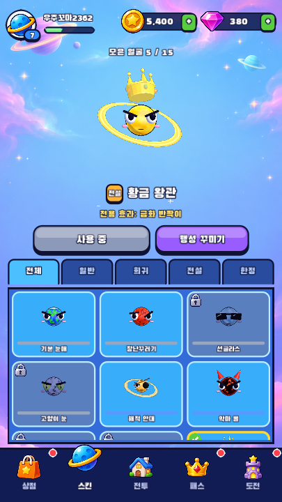
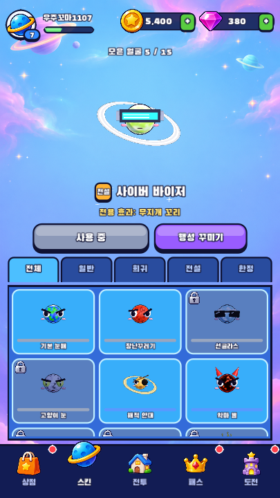

Galaxy Gulp 전설 스킨 (현재 2종)
2026년 11월 24일, 1.0.20 기준. 스킨 탭에서 각 스킨을 고른 화면입니다.

황금 왕관
금빛 행성 · 머리 위 왕관 · 금 고리 · 스스로 빛남
전용 효과: 먹을 때 금화 반짝이와 동전 소리
얻는 법: 광고 15번

사이버 바이저
빛나는 띠 고글 · 흰 고리 · 몸 색이 무지개로 계속 바뀜 (사진은 연두색 순간)
전용 효과: 굴러갈 때 무지개 꼬리
얻는 법: 보석 600 (스타터 팩에도 포함)
| 등급 | 스킨 | 얻는 법 |
|---|---|---|
| 전설 | 황금 왕관, 사이버 바이저 | 광고 15번 / 보석 600 |
| 한정 | 별 눈, 네온 고글, 닌자 두건 | 시즌 패스 10·20·30단계 |
| 한정 | 불꽃 눈, 초신성 후광 | 도전의 탑 10층·20층 |
평가: 전설치고 수수합니다. 일반 스킨 틀에 얼굴 장식·고리·빛을 더한 정도이고, 전용 효과는 판 안에서만 보여 스킨 화면에서 사고 싶게 만드는 힘이 약합니다. 추천: 스킨 화면에서도 전용 효과(꼬리·오라·등장 연출)가 보이게 하고, 몸 모양까지 다른 전설 스킨을 몇 종 추가.